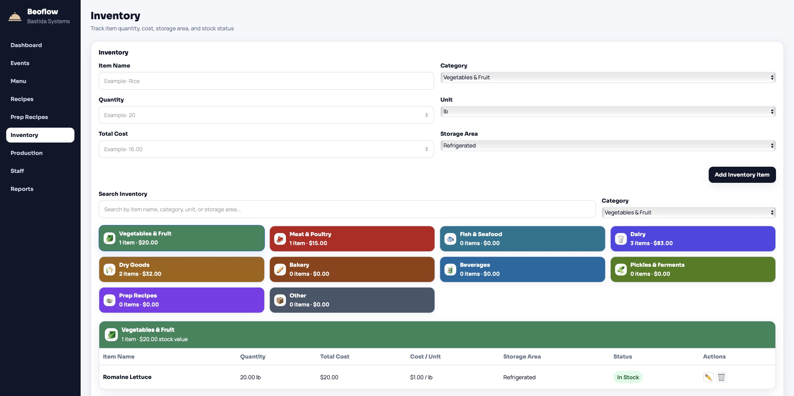
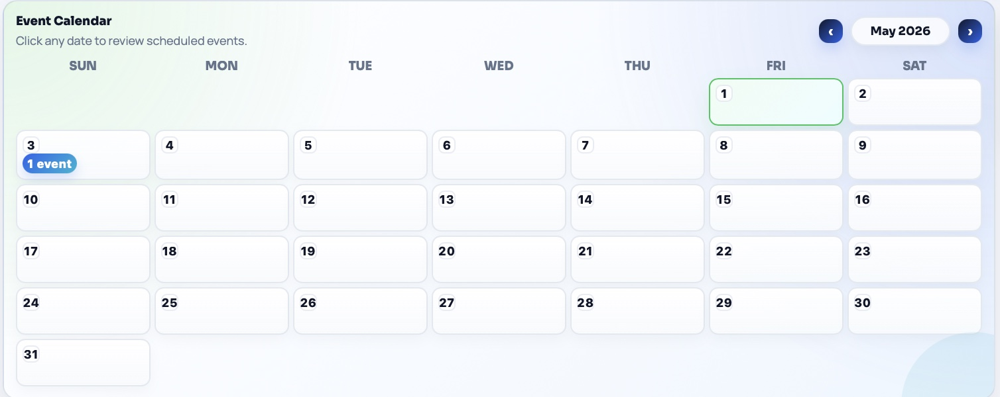
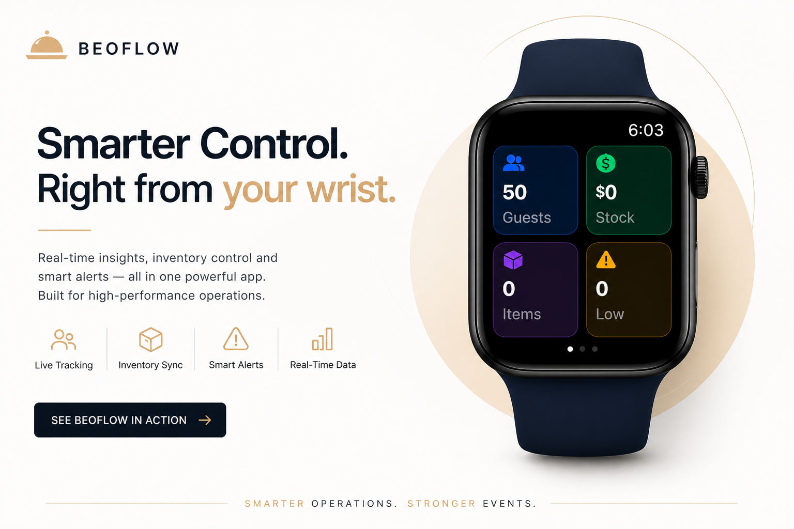

Cost visibility
A clearer connection between inventory, recipes, and menus helps teams see food cost and waste before service.

Beoflow
Beoflow keeps menus, prep, production, staff, inventory, and reports in one clean control center so culinary teams can plan faster and execute with confidence.
Beoflow builds decisions in stages: each phase captures real operational data, generates the next insight, improves accuracy, optimizes processes, and reduces uncertainty.
Integrated kitchen operations system for menus, inventory, recipes, production, staffing, and service.
Connect operational planning with real costs and smart signals to reduce waste, anticipate needs, and improve profitability across every service.

A clearer connection between inventory, recipes, and menus helps teams see food cost and waste before service.
Production and staffing can be supported with service data instead of relying only on manual estimates.
Consolidated information gives managers a helpful tool to protect profitability before service starts.
Beoflow integrates inventory, recipes, menus, prep plans, production, staff, and predictions to provide operational and financial visibility at every stage.
Control ingredients, units, waste, and automatic portion costing.
Menus linked to recipes and inventory to calculate service needs.
Kitchen planning, progress statuses, shifts, schedules, and demand-based roles.
Smart analysis to anticipate operational needs and optimize resources.
Teams can begin with inventory items or recipe details. From there, Beoflow connects menu, service planning, and production with the same operational data.
Start with items, costs, quantities, storage areas, and units.
Or start from recipes with portions, waste, and unit conversions.
Menus can be built from inventory items, recipes, or both.
Menu and service details define exact operational needs.
Service needs become tasks, statuses, staff plans, and control.

Register ingredients, pack sizes, storage areas, units, and costs. Then turn those data points into recipes, reusable prep items, and commercial menus.
When menu and service details are entered, Beoflow calculates preparation quantities, inventory impact, and operational needs for upcoming service.

Turn service needs into actionable tasks and assign staff based on demand, schedules, and roles.
Define what to prep, in what quantity, and when. Track status: not started, in progress, or completed.
Assign staff by service with shifts, schedules, and roles to balance labor load and cost.
Today's service, inventory, calendar, station assignments, reports, and staff rotation are available from one control center.
01 / 07
Fast view of service, production, staffing, inventory, calendar, and rotation planning.
Beoflow extends key information to the wrist so teams can review service counts, inventory value, item counts, and low-stock alerts without leaving service.

Fewer manual errors, better inventory control, precise costing, optimized production, and better staff usage.
Request Demo